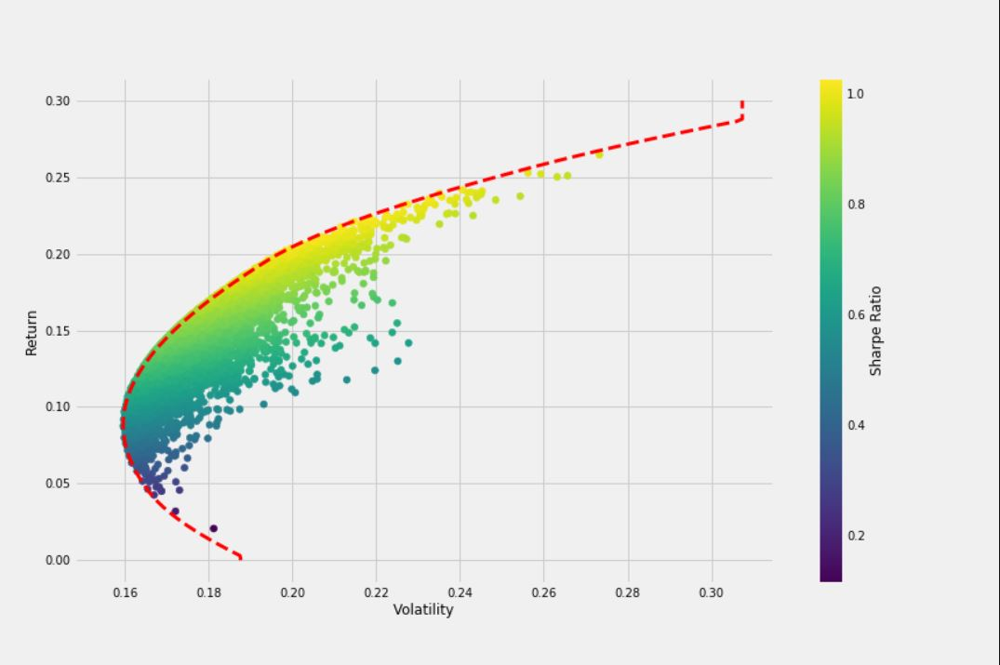

Genetic algorithms for stock portfolio optimization
Inspiration: biology. Project: finance + AI.

Investors have 2 major tradeoffs: they want to get as much return for as little risk as possible, and they have limited money to put into so many choices of assets that it makes a lot of people dizzy to even think about it.
But can survival of the fittest -- Darwinian style -- build a better portfolio than the old-school way? Depends on what you mean by better.
A portfolio that's great for me might be terrible for you. We have different risk appetites -- how fearful we are. We also have different hungers for return -- how greedy we are. So there's no one-size-fits-all portfolio.
Marlon James, Rojae Martin and I were thinking about taking an attempt at solving this problem with AI for our undergrad capstone project, and came up with FolioLens. Here, I'll try to break down our rationale: starting with a little background, explaining how we applied it and sharing the takeaways we got.
A little background
An industry standard for working out the risk-return investment tradeoff is called mean-variance, or Markowitz, optimization, named after Henry Markowitz who proposed the idea in 1952. How does it work? Here's the prettiest way I found it illustrated from a post by Fábio Neves.
A few stuff might be jumping out to you:
- The Y axis shows return: this is a percentage...wherever you see 0.15, that means a 15% return on your investment.
- The X axis shows volatility: this is also a percentage, but not really on purpose.
- Remember: the return on your investment is a percentage.
- If you took note of the returns you got every day, you'd have a lineup of daily returns—and these returns are percentages.
- Volatility is the standard deviation of returns, and returns are percentages. The standard deviation of percentages is going to also be a percentage.
- The column on the right measures the Sharpe ratio: this is a way to summarize the tradeoff between the 2 axes in one number. Generally speaking, the higher—the better.
You'll also see that all portfolios are constrained within the frontier line: portfolios outside of that are either impossible to make or so undesirable that nobody would make them. They also get more favourable moving up (higher returns). But here's the thing:
- This doesn't take individual particularities into account as we outlined earlier.
- Volatility is only one component of risk. The same portfolio has totally different personal implications for persons who vary in age, income, net worth and willingness to accept risk, even though these variables have nothing to do with volatility.
How might we get around that?
Welcome to genetic algorithms
Genetic algorithms are methods in artificial intelligence used to solve problems where no one perfect solution is obvious (like "what's the best portfolio for me?"). They work on the principle of "survival of the fittest".
- An initial population of whatever you're trying to find gets generated. If you're trying to generate a portfolio, then each member of the population would be some sort of portfolio.
- A fitness function is written. This evaluates how "fit" a member of the population is, since we're doing survival of the fittest.
- Crossover allows members of the initial population to reproduce and create another generattion in the population. Since the fittest do the most crossing, the idea is that the best traits get kept and the worst ones don't prevail in the gene pool.
- Mutation allows some sort of change during crossover to maintain some genetic diversity and hopefully speed up the refinement process.
- This process continues until some stopping condition: usually when the problem is solved, when the populations stop getting any better or after a maximum number of generations is reached.
Cool. So how can we apply this to portfolios on the Jamaica Stock Exchance (JSE)?
How we applied it
For some reason, the JSE doesn't make it easy to use its data. We managed to scrape some off it anyway, although not as much as we'd like. Cleaning it was also a task, since some tickers are the same for both USD and JMD denominated stocks :/
After cleaning, we now had time-series price data for stocks on the JSE. With that in mind, we'll go through the steps above, saying how we tailored it to this situation.
- Initial population: we represent a portfolio as a list of 2-tuples...the first value is the stock ticker and the second is its portfolio weight (e.g. seeing (CPJ,0.15) means 15% of your portfolio is invested in CPJ stock). A little more to note:
- The JSE doesn't allow short-selling, so we can't have any negative portfolio weights.
- The JSE also doesn't have any margin trading, so we can't invest more than we have...meaning all portfolio weights muse add up to 1.
- Fitness function: this took a lot of input: user age, user income, user net worth, user self-reported risk rating and an actual portfolio to look at its volatility -- and spat out a number.
- Age, income/net worth ratio and self-reported risk rating all were aggregated into a value betweek 0.5 and 1.5. This gets multiplied by the portfolio volatility. Persons with less capacity to take on risk got higher numbers, and multiplying volatility by a bigger number exaggerates risk for persons who benefit from being more careful.
- Likewise, persons who could afford to be more aggressive got lower numbers. This discounted the risk so they could take on more within reason, and therefore squeeze higher returns out of the market.
- Investors with moderate risk got a number near 1, so there was little change to the original volatility risk rating.
- We also measured concentration risk—the tradeoff from putting a lot of eggs in one basket (or a lot of your portfolio in one asset)—by adapting the Herfindahl-Hirschman Index.
- When this is compared to the portfolio return, a number representing the portfolio's fitness results. The higher, the better.
- Crossover: the fittest portfolio had 30% of the offspring. 2 parents have 2 children, with equal probability of inheriting genes from parent 1 or 2.
- Mutation: take 2 random assets in a portfolio and swap their weights. This happened for 10% of the portfolios in each generation on average.
- Stopping condition: either when top fitness values were within 0.02 of each other for 3 consecutive generations, or after 16 generations passed, whichever was sooner.
Did we get any takeaways?
Takeaways
Our engine sometimes produced excellent portfolios, and other times it didn't. This is a proof of concept and would require further tuning to work as well as we'd like. However, we picked up some lessons on the way:
- Hidden factors often matter: just because Markowitz optimization reliably produces portfolios with a good Sharpe ratio (all things considered) doesn't mean its the most appropriate measure, and taking this into account with other measures may give a better picture of a portfolio. We especially werelooking tino the Sortino ration ,which measures downside portfolio deviations alone (investors tend to be happy if volatility means their stocks gain).
- Access to good data is very helpful: our model may have been more readily refined if we had more, better quality data :)
- Speed is important: the crossover step is very computationally intensive, and maybe representing the portfolios in a more efficient structure could have cut that down.
- Modelling stochastic processes can be tough: especially in a small market with limited liquidity like the JSE. But we try our best.
While we were hoping for a more robust result, FolioLens was a very educational experience. Since the underlying logic works for any asset allocation optimization problem with time-series price data, maybe it could yield some insights for other markets like crypto :)
One day, hopefully we'll see.
JD